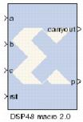

|
|
The System Generator DSP48 macro 2.0 block provides a device independent abstraction of the blocks DSP48, DSP48A, and DSP48E. Using this block instead of using a technology-specific DSP slice helps makes the design more portable between Xilinx technologies.The DSP48 Macro provides a simplified interface to the XtremeDSP slice by the abstraction of all opmode, subtract, alumode and inmode controls to a single SEL port. Futher, all CE and RST controls are grouped to a single CE and SCLR port repectively. This abstraction enhances portability of HDL between device families.You can specify 1 to 64 instructions which are translated into the various control signals for the XtremeDSP slice of the target device. The instructions are stored in a ROM from which the appropriate instruction is selected using the SEL port.The Instruction tab is used to define the operations that the LogiCORE is to implement. Each instruction can be entered on a new line, or in a comma delimited list, and are enumerated from the top down. You can specify a maximum of 64 instructions.Refer to the topic Instructions Page (page 3) of the LogiCORE IP DSP48 Macro v2.0 Product Specification for details on all the parameters on this tab.When By Tier is selected for Pipeline Options these parameters are used to enable/disable the registers across all the input paths for a given pipeline stage. The following restrictions are enforced:
<sysgen_path>/examples/dsp48/mult35x35/dsp48macro_mult35x35.mdl
V2.0